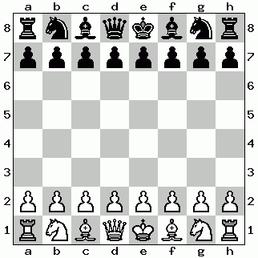

Partia włoska
Partia włoska to jedno z najstarszych i najbardziej klasycznych otwarć szachowych, rozpoczynające się ruchami 1. e4 e5 2. Nf3 Nc6 3. Bc4. Celem białych jest szybki rozwój figur oraz kontrola centrum, szczególnie pól d4 i e5. Pozycje w partii włoskiej są zazwyczaj otwarte i dynamiczne, co prowadzi do wielu taktycznych możliwości.
Główne warianty partii włoskiej to wariant klasyczny, w którym czarne odpowiadają ruchem 3. ... Bc5, oraz wariant dwuruchowy (Two Knights Defense), gdzie czarne grają 3. ... Nf6. W wariancie klasycznym czarne stawiają gońca na aktywnym polu, kontrolując centrum i wywierając presję na pionka f2. W wariancie dwuruchowym czarne rozwijają skoczka, atakując pionka e4 i przygotowując możliwość kontrataku, co prowadzi do ostrych i taktycznych pozycji.
W partii włoskiej białe starają się szybko rozwijać swoje figury, często kontynuując ruchami c3 i d4, aby uzyskać pełną kontrolę nad centrum. Zarówno białe, jak i czarne często wykonują szybkie roszady, aby zapewnić bezpieczeństwo swojemu królowi. W wielu wariantach białe mogą próbować atakować na skrzydle królewskim, zwłaszcza jeśli czarne zdecydują się na krótką roszadę.
Zalety partii włoskiej to prosty i logiczny rozwój, co czyni ją łatwą do zrozumienia dla początkujących, ale jednocześnie zawiera wiele głębokich planów i idei dla bardziej zaawansowanych graczy. Otwarte pozycje i dynamiczne możliwości taktyczne sprawiają, że gra jest ciekawa i angażująca. Partia włoska oferuje także elastyczność, pozwalając na przejście do różnych struktur pionowych i planów w zależności od reakcji przeciwnika.
Wady partii włoskiej to istnienie wielu znanych pułapek i taktycznych zaszachowań, na które obie strony muszą uważać. Ponadto, jeśli czarne dobrze się przygotują, mogą osiągnąć równą pozycję bez większych problemów, co może być frustrujące dla białych szukających przewagi.
Partia włoska była popularna w szachach od wieków, szczególnie w czasach renesansu, gdy szachy były grane przez europejską arystokrację. Wielu czołowych szachistów, zarówno dawnych, jak i współczesnych, używało partii włoskiej, aby osiągać przewagę w swoich grach. Obecnie jest ona często grana na wszystkich poziomach, od amatorskich po profesjonalne turnieje. Partia włoska oferuje bogactwo strategii i taktyki, co czyni ją jednym z najbardziej wszechstronnych i interesujących otwarć w szachach. Dzięki swojej prostocie i głębokości jest świetnym wyborem zarówno dla początkujących, jak i zaawansowanych graczy, którzy chcą zrozumieć podstawowe zasady rozwoju i kontroli centrum w szachach.
